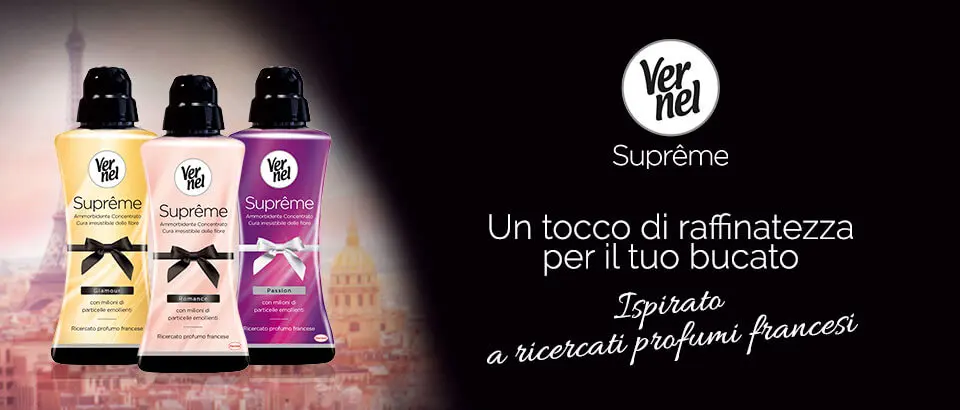
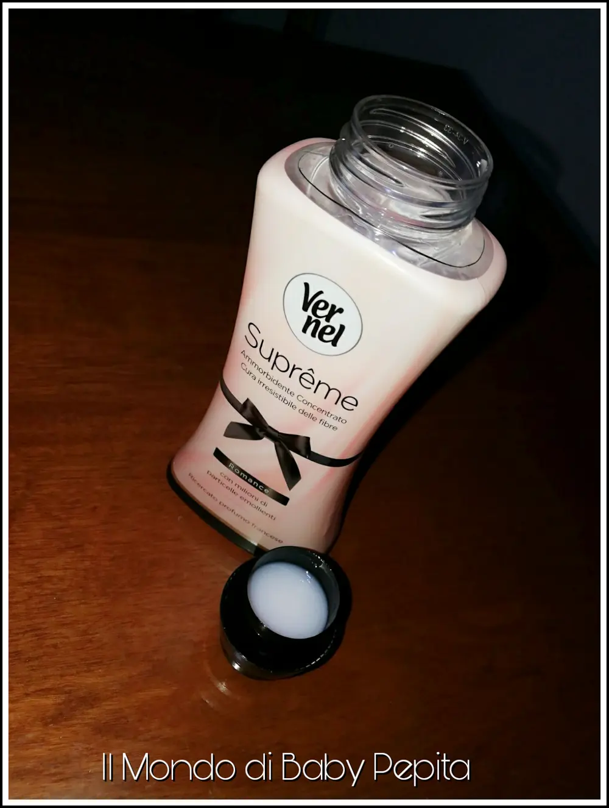
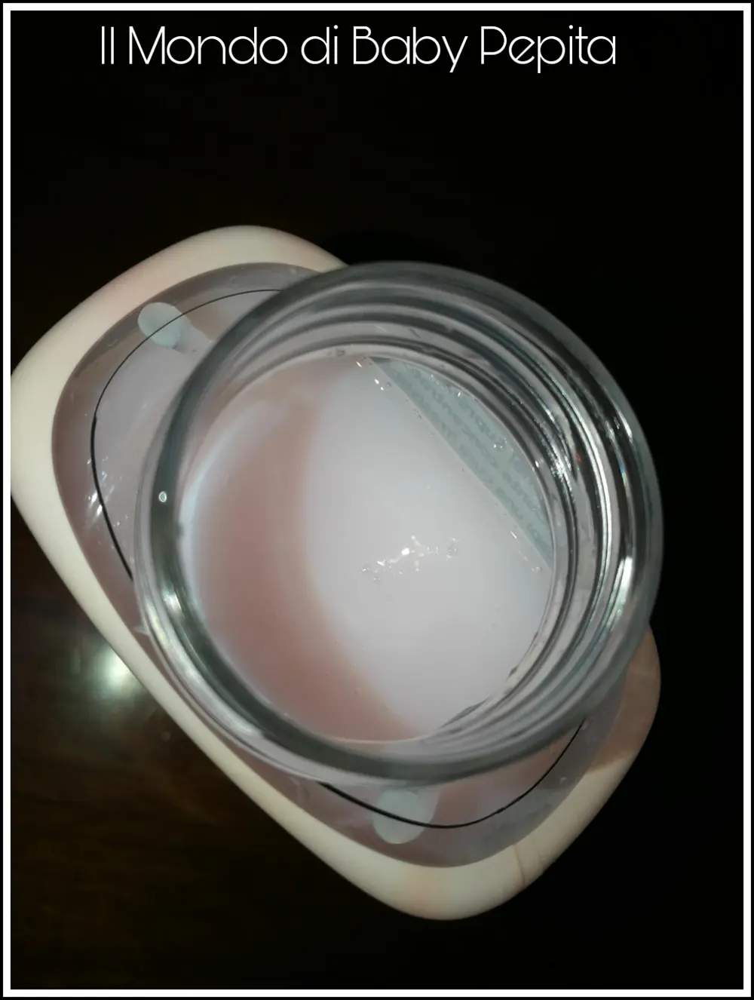
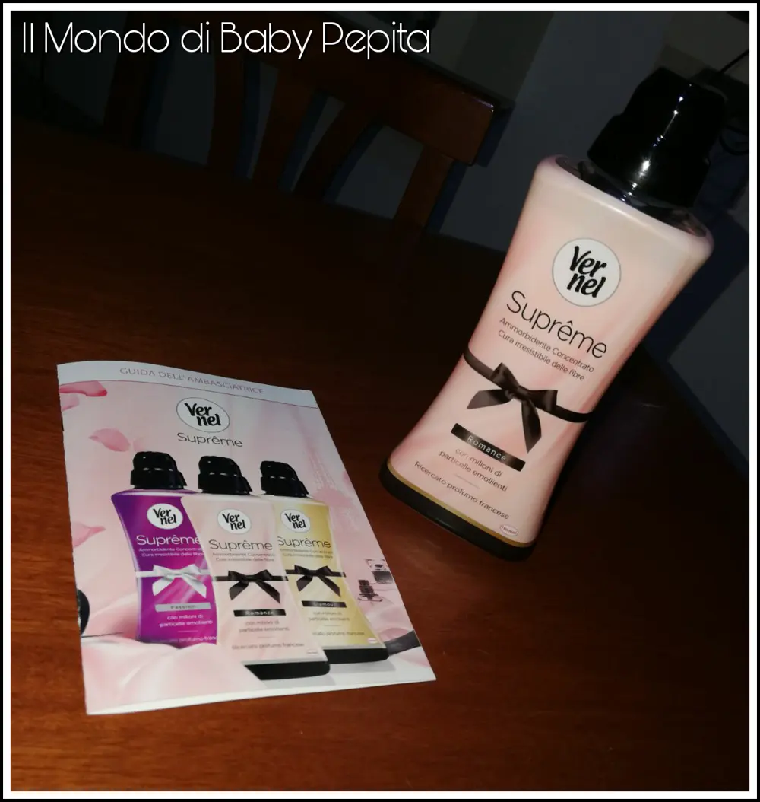
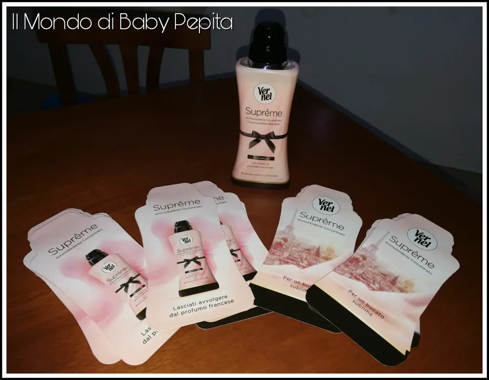

Ammorbidente: Ambassador Vernel Suprême
Ammorbidente: Testiamo insieme oggi Vernel Suprême grazie a DonnaD amica fidata.
Si, perché sono stata scelta come Ambassador per provare #VernelSupreme ed il suo nuovo ammorbidente dai profumi romantici e delicati.

Nasce l'idea di ricercare profumi raffinati ed è così che Vernel pensa alla Francia e crea 3 varianti profumazioni tra Romance, Passion e Glomour.
Già aprendo la confezione c'è una scia dolce che ti avvolge.

Trovare un ammorbidente che lasci i panni piacevolmente profumati dopo essere stati stesi e stirati non è sempre semplice. . Vernel Suprême riesce a fare tutto questo!
Grazie alla sua formula con milioni di particelle emolliente rende questo ammorbidente adatto ad ogni fibra di tutto il nostro bucato ma trattando i capi con delicatezza lasciando traspirare un inebriante profumo floreale e fruttato ma molto molto delicato nonché un'irresistibile morbidezza.
Packaging:
Il packaging è poi davvero bello, quello che ho testato, cioè la variante Romance ha una confezione rosa chiaro che richiama davvero qualcosa di raffinato e soffice. Come anche il liquido all'interno è della stessa tonalità.

Confezione:
Si presenta in una confezione di 600 ml, sul retro possiamo leggere le indicazioni per il dosaggio ovvero:
- Per il lavaggio in lavatrice da 4 a 5 kg si devono utilizzeremo circa 25-35ml;
- Per il lavaggio in lavatrice da 6 a 8 kg si devono utilizzare circa 55 ml che è poi l'equivalente del tappo dosatore quasi pieno.

Consiglio di utilizzare però, anche una quantità minore di come c'è scritto sulla confezione perchè posso garantirvi lo stesso il risultato sperato.
È tanto morbido che anche con dosi minori fa il suo dovere.

Anche se è in fase di testaggio da tante noi Ambassador, Vernel Suprême è già sul mercato in tutte e tre le varianti, possiamo trovarlo ad un prezzo che si aggira intorno ai 2,20€, poi dipende anche dalle offerte e/o promo presenti sul mercato.
Le tre fragranze:
Abbiamo detto che sono state create appunto, tre profumazioni ma DonnaD amica fidata ci ha fatto testare a tutte e 2000 Ambassador solo la profumazione Romance.
Se Romance ha un delicato profumo di fruttato e floreale; la profumazione Glomour è caratterizzato da note floreali miste al legno; infine c'è la terza variante la fragranza Passion ed ha un determinato profumo di fiori misti tra gelsomino, iris, muschio e giacinto.
Credo che proverò anche le altre due profumazioni ma sono già sicura che il mio preferito resterà questo Romance, proprio perché è caratterizzato da un piacevole buon odore che resta addosso.
Ringrazio DonnaD amica fidata per avermi scelta e Vernel Suprême per avermi fatto provare questo nuovo e gradito ammorbidente.